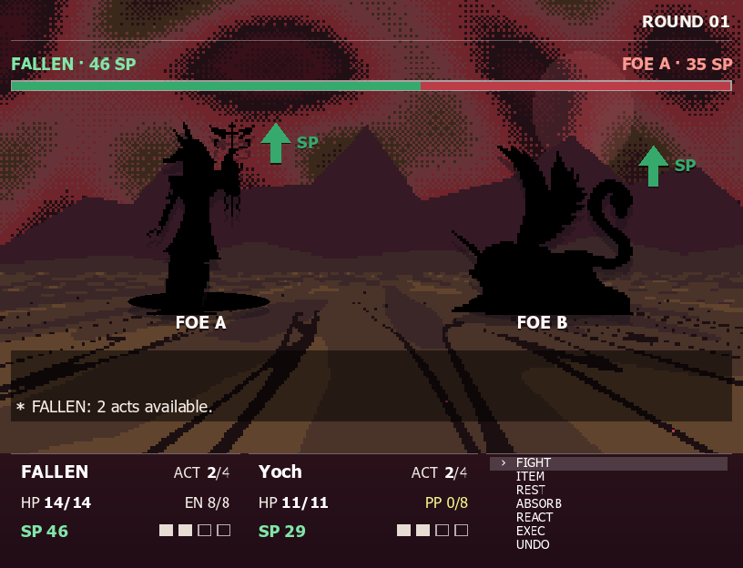

Cada proposta usa o cenário D real exportado do jogo e as silhuetas reais, em 816×624. Todas mostram a mesma informação: rodada, barra de SP, nomes dos inimigos, log de 3 linhas, HP/EN/PP/SP/ACT dos dois heróis e os sete comandos. A primeira aba é o HUD de hoje, para comparar. As abas 13 a 15 são versões mais baixas da 1 (janelas), com os heróis separados; as abas 10 a 12 misturam a 9 (fios) com a 1 (janelas); as abas 5 a 9 são a segunda rodada: antigas, simples e com o máximo de espaço para o cenário, os inimigos e o texto; as marcadas "1ª" são a rodada anterior.
